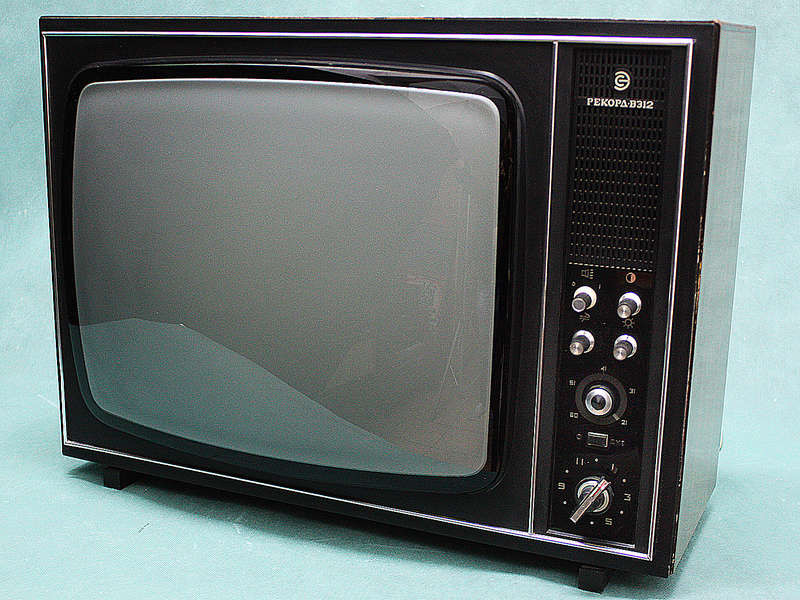
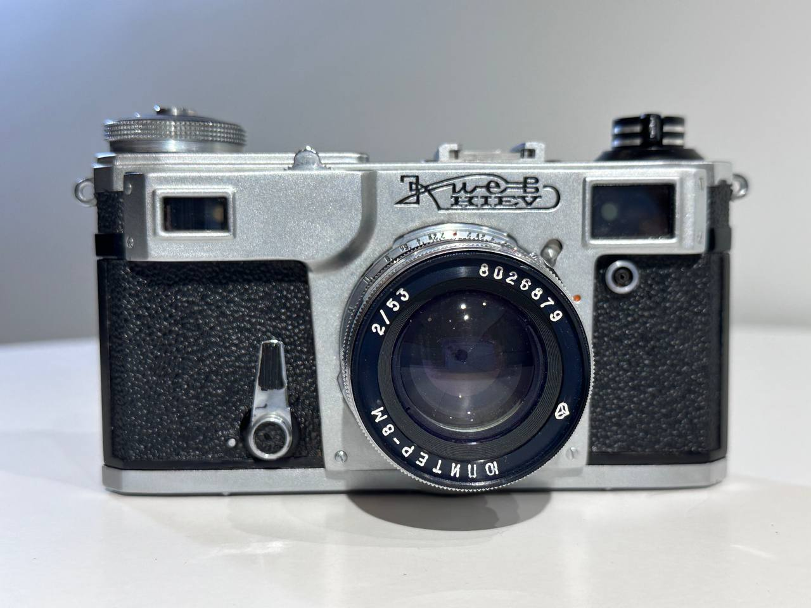
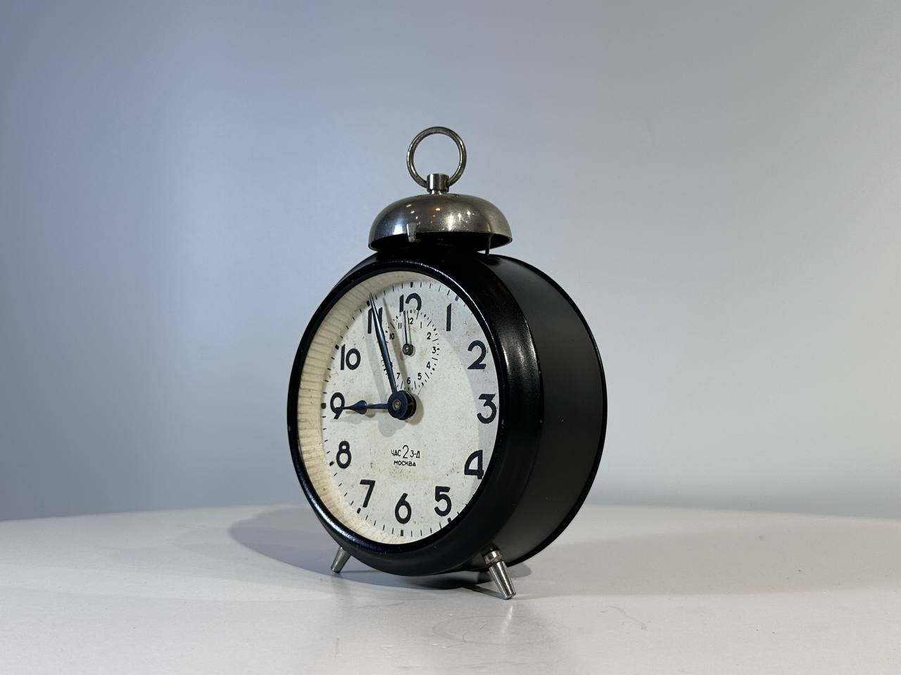
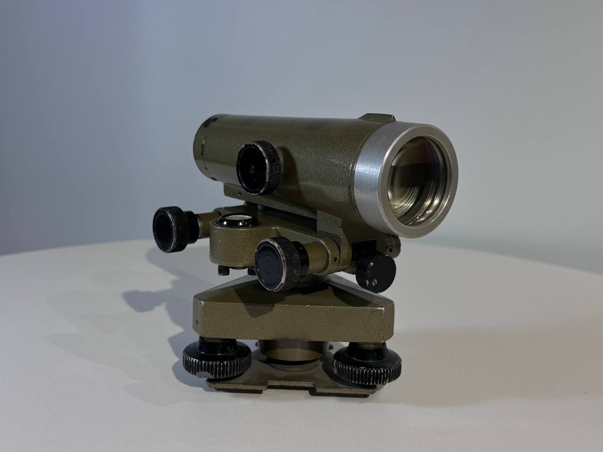
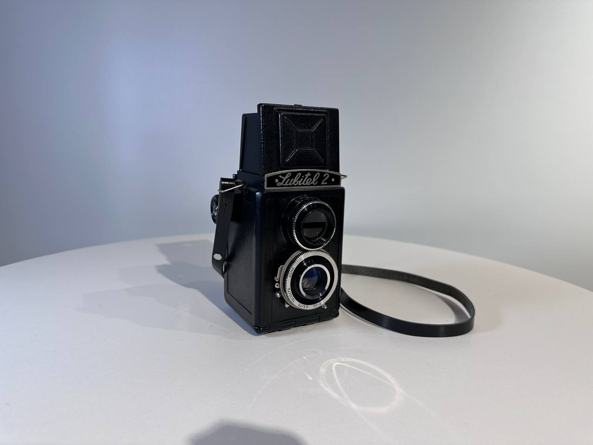
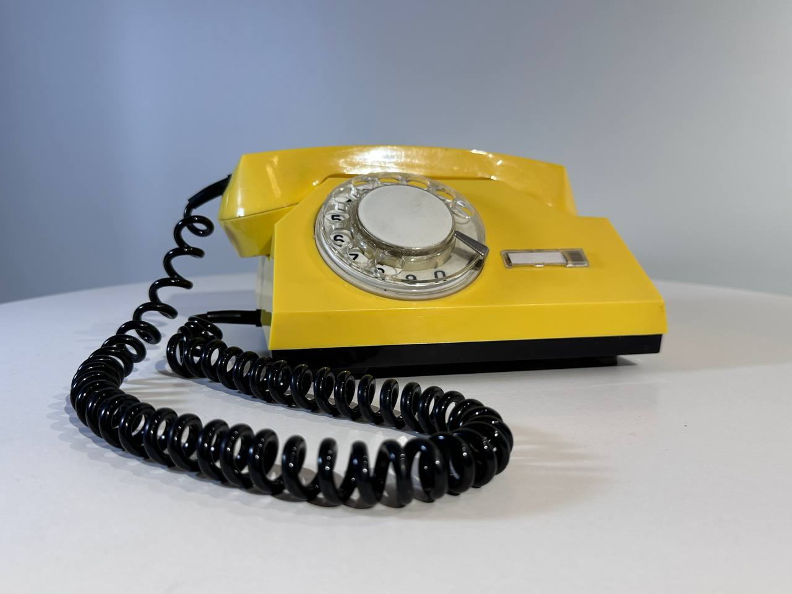

Коллекция объектов
Фотоаппарат "Зенит-Е"
Первый массовый зеркальный фотоаппарат в СССР
Холодильник "ЗИЛ-Москва"
Легендарный советский холодильник
"Москвич-412"
Советский легковой автомобиль

Телевизор "Рекорд В-312"
Чёрно-белый телевизор для массового потребителя

Фотоаппарат "Киев-4"
Дальномерный фотоаппарат, основанный на немецком Contax II

Будильник "Час-2"
Механический будильник с маятниковым механизмом

Нивелир Н3
Геодезический инструмент для определения разности высот

Фотоаппарат "Любитель-2"
Двухобъективный зеркальный фотоаппарат для любительской съемки

Телефонный аппарат СТА-2
Стационарный телефонный аппарат с дисковым номеронабирателем